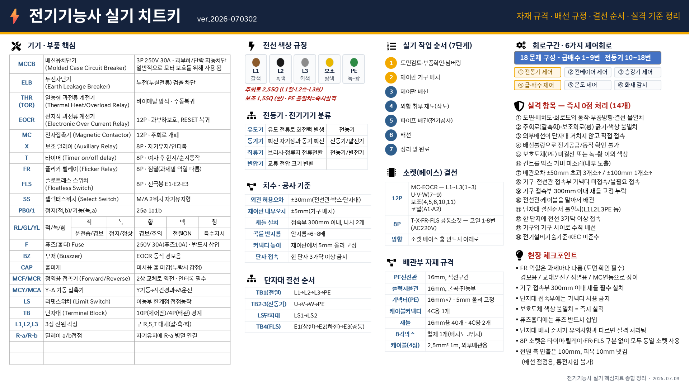

자재 규격 · 배선 규정 · 결선 순서 · 실격 기준 정리 | ver.2026-07-03
| 기호 | 명칭 | 규격 / 특징 |
|---|---|---|
| MCCB | 배선용차단기 | 3P 250V 30A · 과부하/단락 자동차단 |
| ELB | 누전차단기 | 누전(누설전류) 검출 차단 |
| THR (TOR) | 열동형 과전류 계전기 | 바이메탈 방식 · 수동복귀 |
| EOCR | 전자식 과전류 계전기 | 12P · 과부하 보호, RESET 복귀 |
| MC | 전자접촉기 | 12P · 주회로 개폐 |
| X | 보조릴레이 | 8P · 자기유지/인터록 |
| T | 타이머 (on/off delay) | 8P · 여자 후 한시/순시동작 |
| FR | 플리커 릴레이 | 8P · 점멸 (과제별 역할 다름 — 도면 확인 필수) |
| FLS | 플로트레스 스위치 | 8P · 전극봉 E1·E2·E3 |
| SS | 셀렉터스위치 | M/A 2위치 자기유지형 |
| PB0 / PB1 | 정지(적,b) / 기동(녹,a) | 25ø 1a1b |
| RL / GL / YL | 적 / 녹 / 황 표시등 | M1운전(적) / M2운전(녹) / 경보(황) |
| F | 퓨즈(홀더) | 250V 30A (퓨즈 10A) · 반드시 삽입 |
| BZ | 부저 | EOCR 동작 경보음 |
| CAP | 홀마개 | 미사용 홀 마감 (누락 시 감점) |
| MCF / MCR | 정역용 접촉기 | 2상 교체로 역전 · 인터록 필수 |
| MCY / MCΔ | Y-Δ 기동 접촉기 | Y기동 → 시간경과 → Δ운전 |
| L/S | 리밋스위치 | 이동부 한계점 접점동작 |
| TB | 단자대 | 10P(제어판) / 4P(배관) 경계 |
| L1, L2, L3 | 3상 전원 각상 | 구 R, S, T 대체 (갈·흑·회) |
| R-a / R-b | 릴레이 a/b 접점 | 자기유지에 R-a 병렬 연결 |
| 구분 | 제어회로 |
|---|---|
| 급배수 1~9번 | ④ 급·배수 제어 ⑤ 온도 제어 ⑥ 화재 감지 |
| 전동기 10~18번 | ① 전동기 제어 ② 컨베이어 제어 ③ 승강기 제어 |
| 분류 | 설명 | 용도 |
|---|---|---|
| 유도기 | 유도 전류로 회전력 발생 | 전동기 |
| 동기기 | 회전 자기장과 동기 회전 | 전동기 / 발전기 |
| 직류기 | 브러시·정류자 전류전환 | 전동기 / 발전기 |
| 변압기 | 교류 전압 크기 변환 | — |
| 선로 | 색상 | 굵기 | 비고 |
|---|---|---|---|
| L1 | 갈색 | 2.5 SQ | 주회로 |
| L2 | 흑색 | 2.5 SQ | 주회로 |
| L3 | 회색 | 2.5 SQ | 주회로 |
| 보조 | 황색 | 1.5 SQ | 제어회로 |
| PE | 녹-황 | — | 불일치 = 즉시 실격 |
| 항목 | 기준 |
|---|---|
| 외관 허용오차 | ±30mm (전선관·박스·단자대) |
| 제어판 내부오차 | ±5mm (기구 배치) |
| 새들 설치 | 접속부 300mm 이내, 나사 2개 |
| 곡률 반지름 | 안지름 × 6~8배 |
| 커넥터 높이 | 제어판에서 5mm 올려 고정 |
| 단자 접속 | 한 단자 3가닥 이상 금지 |
| 전원 측 인출 | 100mm, 피복 10mm 벗김 (통전시험 불가) |
| 단자대 | 결선 순서 |
|---|---|
| TB1 (전원) | L1 → L2 → L3 → PE |
| TB2·3 (전동기) | U → V → W → PE |
| LS 단자대 | LS1 → LS2 |
| TB4 (FLS) | E1(상한) → E2(하한) → E3(공통) |
| 소켓 | 해당 기기 | 결선 내용 |
|---|---|---|
| 12P | MC · EOCR | L1~L3 (1~3번) · U·V·W (7~9번) · 보조 (4,5,6,10,11번) · 코일 (A1·A2) |
| 8P | T · X · FR · FLS | 코일 1·8번 (AC 220V) — 공통 소켓 동일 규격 |
| 주의 | 내용 |
|---|---|
| 소켓 방향 | 베이스 홈 반드시 아래로 |
| 8P 소켓 | 타이머·릴레이·FR·FLS 구분 없이 모두 동일 소켓 사용 |
| 자재 | 규격 | 비고 |
|---|---|---|
| PE 전선관 | 16mm | 직선구간 |
| 플렉시블관 | 16mm | 굴곡·진동부 |
| 커넥터 (PE) | 16mm × 7개 | 5mm 올려 고정 |
| 케이블 커넥터 | 4C용 1개 | |
| 새들 | 16mm용 40개 · 4C용 2개 | |
| 8각박스 | 철제 1개 | 배치도 J위치 |
| 케이블 (4심) | 2.5mm² 1m | 외부배관용 |
